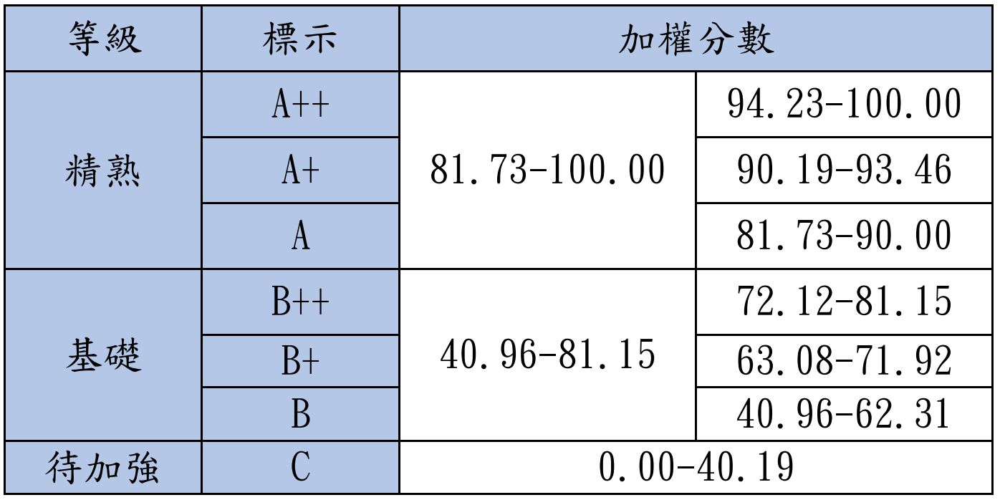
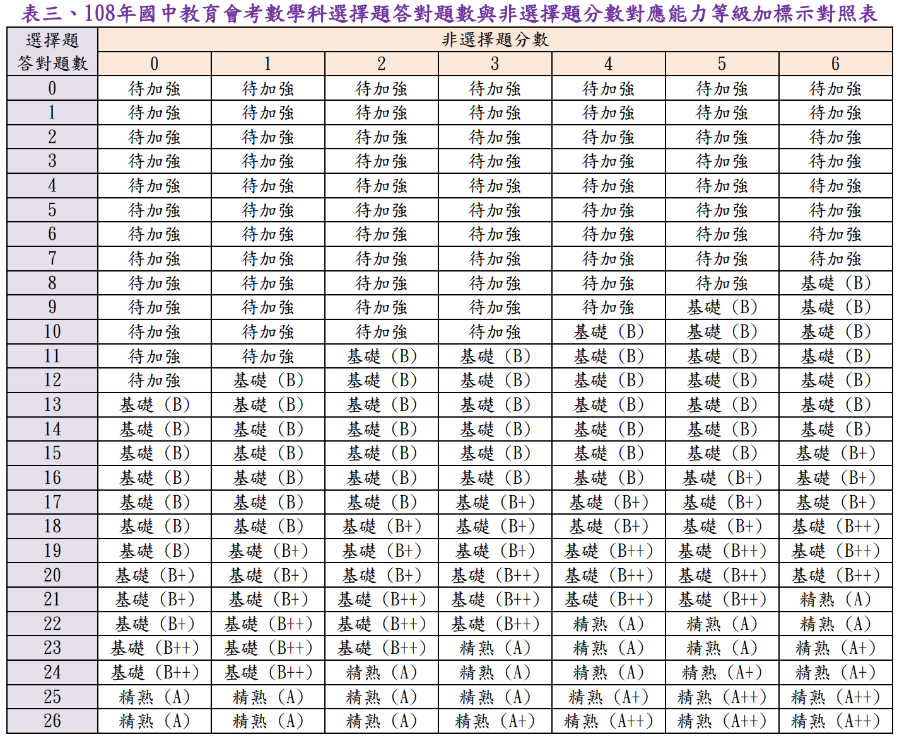
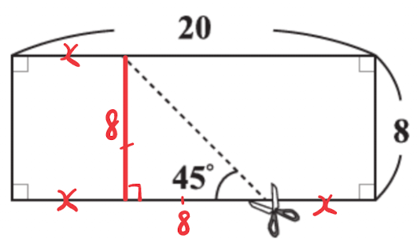
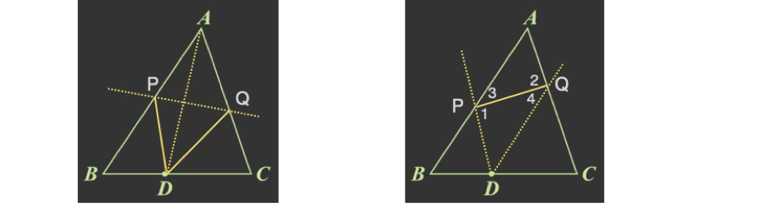
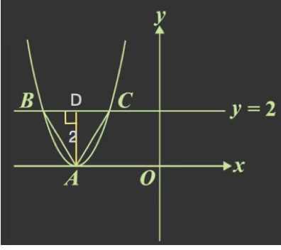

年度解析+等級對照表
108 年會考數學解析：穩定發揮、掌握基本功的關鍵年
綜觀 108 年會考數學試題，整體難度分佈顯著平穩，是近年來相對「親民」的一年，但簡單代表的是「容錯率」極低。
高通過率的分佈：全卷僅有一題通過率低於 0.4（約 0.35），其餘題目皆在 0.4 以上。這代表該年度的「陷阱」較少，鑑別度建立在細心程度而非刁鑽的題型。
非選題難度平實：該年度非選擇題的設計直觀，未出現過於繁瑣的長敘述或複雜建模。只要邏輯清晰、敘述完整，奪取滿分的門檻相對較低。
NUMA 策略提醒： 在考題較簡單的年度，「零失誤」就是唯一的指標。針對這類試卷，在大家都覺得容易時，你的專業度與細心，才是脫穎而出的決勝點。。
等級加標示與加權分數對照表

等級加標示與答對題數對照表

各科等級加標示人數百分比統計表
108年會考-數學詳解
第一部分:選擇題(1 ~ 26 題)
1.
答案
\((A)\)
詳解
\(\Rightarrow
-\frac53+\frac16\)
\(= -\frac{10}{6}+\frac{1}{6}\)
\(= -\frac{9}{6}\)
\(= -\frac{3}{2}\)
2.
答案
\((A)\)
詳解
總人口數量：
105年：\(\approx 1200+1000=2200\)
106年：\(\approx 2400+2000=4400\)
107年：\(\approx 2000+3100=5100\)
為逐年增加，故選A。
3.
答案
\((D)\)
詳解
\((2x-3)(3x+4)=6x^2+8x-9x-12=6x^2-x-12\)
4.
答案
\((C)\)
詳解
2底＋3側 \(=2\times 4a+3\times 2b=8a+6b\)
5.
答案
\((B)\)
詳解
\(\sqrt{44}=2\sqrt{11}\Rightarrow
a=11\)
\(\sqrt{54}=3\sqrt6\Rightarrow
b=6\)
\(a+b=11+6=17\)
6.
答案
\((C)\)
詳解
430 萬瓩
\(=4.3\times 10^6\) 瓩
\(=4.3\times 10^6\times 10^3\) 瓦
\(=4.3\times 10^9\) 瓦
7.
答案
\((D)\)
詳解
過 \((-3,4)\) 且與 \(y\) 軸垂直的直線方程式為 \(y=4\)
所以找 \(y\) 坐標為 4 的點
故選 D
8.
答案
\((A)\)
詳解
\(5x^2+17x-12\)
\(=(x+4)(5x-3)\)
\(=(x+a)(bx+c)\)
\(\Rightarrow a=4, b=5, c=-3\)
\(a+c=4+(-3)=1\)
9.
答案
\((A)\)
詳解

如圖紅色框一組，每兩個三角形＋一個正方形為一組，有 40 組
剩下 4 個三角形
共有 \(40\times 2+4=84\) 個三角形
10.
答案
\((D)\)
詳解
\(d\) 到 \(5\) 的距離為 \(d\) 到 \(c\) 的距離
\(\therefore d\) 為 \(c\) 和 \(5\) 的中點
在 \(O、B\) 之間，故選 D
11.
答案
\((C)\)
詳解
 設短邊為
\(x\)，如圖
\(x+8+x=20\)
\(\Rightarrow 2x=12\)
\(\Rightarrow x=6\)
12.
答案
\((D)\)
詳解
設桂圓蛋糕買 \(x\) 盒，金棗蛋糕買
\(10-x\) 盒
\(350x+200(10-x)\leq 2500\)
\(\Rightarrow 350x+2000-200x\leq
2500\)
\(\Rightarrow 150x\leq 500\)
\(\Rightarrow x\leq
\frac{10}{3}\)
\(12x+6(10-x)\geq 75\)
\(\Rightarrow 12x+60-6x\geq 75\)
\(\Rightarrow 6x\geq 15\)
\(\Rightarrow x\geq \frac{5}{2}\)
\(\therefore \frac{5}{2}\leq x\leq
\frac{10}{3}\)
因為 \(x\) 為整數，所以 \(x=3\)
\(3\times
350+200\times(10-3)=1050+1400=2450\)
總共花了2450元，選 D
13.
答案
\((D)\)
詳解

14.
答案
\((D)\)
詳解
抽出後放回，每次抽球互不影響。
抽到紅球的機率為 \(\frac{2}{53+2}=\frac{2}{55}\)，
15.
答案
\((C)\)
詳解
\(\because \overline
{AC}=\overline{BC}<\overline{AB}\)
\(\therefore \angle A=\angle ABC <\angle
ACB\)
\(\angle 1=\angle A+\angle ACB\)
\(\angle 2=\angle A+\angle ABC\)
\(\Rightarrow \angle 1 > \angle
2\)
\(180^\circ-\angle 2 =\angle ACB >\angle
A\Rightarrow \angle A+\angle 2 < 180^\circ\)
\(180^\circ-\angle 1 =\angle ABC =\angle
A\Rightarrow \angle A+\angle 1 = 180^\circ\)
16.

答案
\((B)\)
詳解
沒有自備容器每公克\(=(295+5)\div
250\)
\(y=\frac{300}{250}x\)
17.
答案
\((D)\)
詳解

上三角形與大三角形為相似三角形
設上三角形面積為 \(x\)
面積比 ＝ 邊長平方比
上三角形：大三角形 \(=
x:14=3^2:7^2\)
\(\Rightarrow
x=14\times\frac{9}{49}=\frac{18}{7}\)
左右三角形可合併成為一個三角形，與平行四邊形等高
設梯形高為 \(h\)
梯形面積 \(=\) 全-上三角形
\(\Rightarrow (3+7)\times h \times
\frac12=14-\frac{18}{7}\)
\(\Rightarrow 5h=\frac{80}{7}\)
\(\Rightarrow h=\frac{16}{7}\)
平行四邊形面積 \(= 4\times
\frac{16}{7}=\frac{64}{7}\)
18.
答案
\((B)\)
詳解
一圈有 36個間隔，每個間隔需時 \(30\div
36=\frac{5}{6}\) 分鐘
從 21會經過 36再到 9，總共有 \(36-21+9=24\) 個間隔
\(24\times \frac{5}{6}=20\) 分鐘
19.
答案
\((D)\)
詳解
設 \(\overline{AD}=x\)
\(\overline{AB}^2+\overline{BC}^2=\overline{AC}^2\)
\(\Rightarrow
(x+1)^2+(1+4)^2=(x+4)^2\)
\(\Rightarrow
x^2+2x+1+25=x^2+8x+16\)
\(\Rightarrow 6x=10 \Rightarrow
x=\frac{5}{3}\)
20.
答案
\((A)\)
詳解
設來回均搭纜車的有 \(x\) 人,
單程搭纜車的有 \(y\) 人
\(x\) 人每人會搭兩趟䌫車，\(y\) 人每人只搭一趟䌫車
\(\left\{\begin{matrix}
2x+y=15+10
\\300x+200y=4100
\end{matrix}\right.\Rightarrow (x,y)=(9,7)\)
\(x+y=9+7=16\)
21.
答案
\((A)\)
詳解
沙拉有幾份，\(C\) 餐就有幾份
全部的飲料\(=B＋C\)
全部義大利麵 \(＝A＋B＋C\)
\(C=y\)
\(B=x-y\)
\(A=10-B-C=10-(x-y)-y=10-x\)
22.
答案
\((C)\)
詳解
\(420=35\times 2^2\times 3\)
\(a=35\times x\Rightarrow x\)
不可有2、3的因數
所以 20 不可能為 \(a\) 的因數，25
可能為 \(a\) 的因數
23.
答案
\((C)\)
詳解

如圖
\(\angle1=\frac12\angle C\)
\(\angle2=\frac12\angle A\)
\(\because \angle A < \angle C \therefore
\angle2 < \angle1\)
\(\therefore \overline{IC} \nparallel
\overline{I'A'}\)
\(\overline{ID}=\overline{I'E}\)
（內心到三邊距離相等）
\(\therefore \overline{II'} \parallel
L\) （平行線間距離處處相等）
24.
答案
\((B)\)
詳解
\(\angle{APQ}=\frac12(\overset{\frown}{AD}+\overset{\frown}{DQ})=\frac12(180^\circ+\overset{\frown}{DQ})=130^\circ\)
\(\Rightarrow\overset{\frown}{DQ}=80^\circ\)
\(\overset{\frown}{BD}=\frac12\overset{\frown}{AD}=90^\circ\)
\(\overset{\frown}{CD}=\frac12\overset{\frown}{BD}=45^\circ\)
所以 \(Q\) 介於 \(B, C\) 之間，\(\overset{\frown}{BQ}<\overset{\frown}{QC}\)
25.
答案
\((A)\)
詳解

如圖
(甲) \(\overline{AP}=\overline{DP},
\overline{AQ}=\overline{DQ}, \overline{PQ}=\overline{PQ}\)
\(\Rightarrow \triangle APQ \cong \triangle
DPQ\) （SSS）
(乙) \(\angle1=\angle2,
\angle3=\angle4\) （內錯角相等）\(\overline{PQ} =\overline{PQ}\)
\(\Rightarrow \triangle APQ \cong \triangle
PDQ\) （ASA）
26.
答案
\((B)\)
詳解
 作 \(\overline{AD}\perp \overline{BC}\) 於 \(D(-3,2)\)
\(\Rightarrow \overline{AD}=2\)
\(\triangle{ABD}\) 為 30-60-90
三角形，所以 \(\overline{BD}=\frac{2}{\sqrt{3}}\)
\(\Rightarrow B(-3-\frac{2}{\sqrt{3}},2),
C(-3+\frac{2}{\sqrt{3}},2)\)
設抛物線方程式為 \(y=a(x+3)^2\)
\(B(-3-\frac{2}{\sqrt{3}},2)\) 代入得
\(2=a(-\frac{2}{\sqrt{3}})^2\)
\(\Rightarrow a=\frac32\)
\(\therefore\) 抛物線方程式為 \(y=\frac32(x+3)^2\)
與 \(y\) 軸交點為 \(x=0\) 代入得 \(y=\frac32\times 3^2=\frac{27}{2}\)
第二部分:非選擇題 ( 第 1 ~ 2 題 )
1.
答案
\((1) 10\)
\((2)\) 不合理
詳解
\((1)\)
90 % \(=\frac{SPF-1}{SPF}\times
100%\)%
\(\Rightarrow 0.9\times SPF = SPF -
1\)
\(\Rightarrow SPF = 10\)
\((2)\)
SPF25的防護率\(=\frac{25-1}{25}\times
100\)%\(=96\)%
SPF50的防護率\(=\frac{50-1}{50}\times
100\)%\(=98\)%
98% 比 96% 多 2%, 不是多一倍，所以不合理。
答：(1) 10 (2) 不合理
2.
答案
\((1)\) 100 cm
\((2)\) 330 cm
詳解

物長與影長形成的三角形為相似三角形
物長：影長的比值相等
\((1)\) 設影長 為 \(x\) cm
\(90:60=150:x\Rightarrow
x=\frac{60\times150}{90}=100\) cm
\((2)\) 如圖，設圓柱長為 \(150+y\) cm
\(90:60=y:120\Rightarrow y=180\)
cm
\(\therefore\) 圓柱長為 \(150+180=330\) cm
答：(1) 100 cm (2) 330 cm